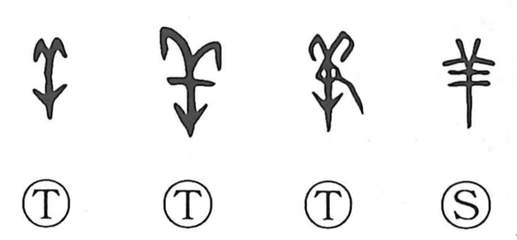

羊

Kun: hitsuji | On: you
sheep
Explanation
This character is a straightforward pictograph: a sheep seen from the front, capturing the upper body and its paired horns. By contrast, 美 depicts the entire animal as if viewed from above, from the horns down to the hind legs, while 牛 shows an ox front-on, its horns drawn more massively than a sheep’s. In ancient ritual, sheep were important offerings to the gods and were also used in a sacred sheep ordeal. From this context, 義 expresses the careful inspection that ensured a sacrificial sheep was without blemish, and 犠 originally referred to the ox presented in sacrifice.